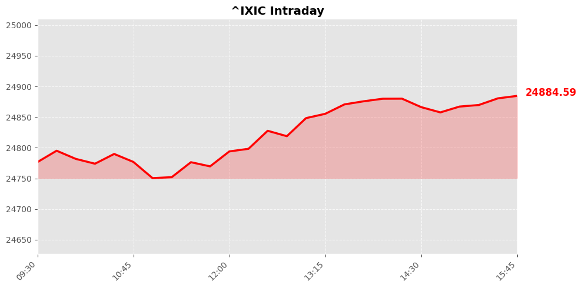
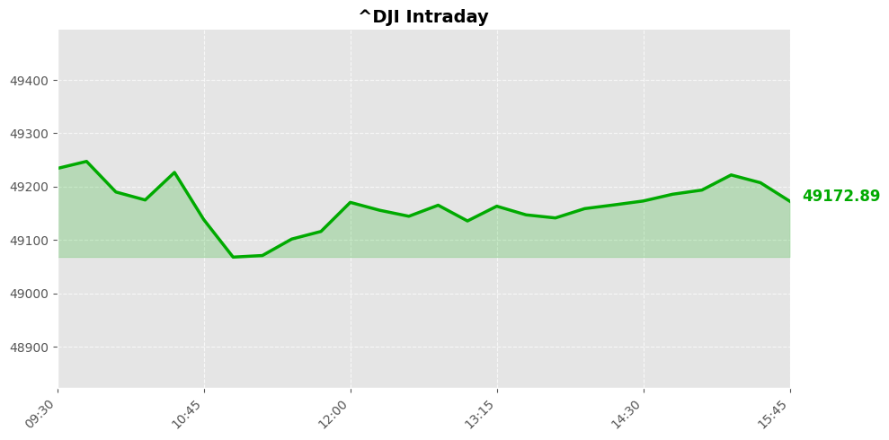
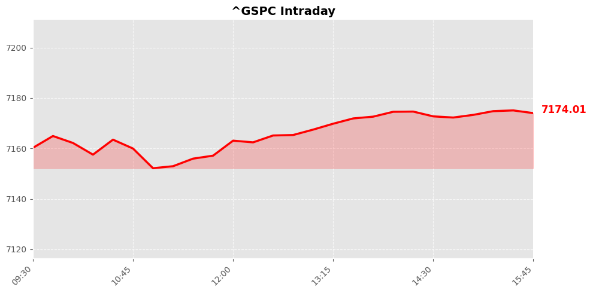

Daily Market Briefing
Market Overview



Market Analysis
The recent trading session reflects a cautiously optimistic market sentiment, characterized by modest gains across major indices. The NASDAQ Composite edged higher by 50.5 points, or approximately 0.2%, signaling continued investor interest in technology and growth-oriented sectors. This slight uptick suggests that investors remain somewhat optimistic about the sector's long-term prospects, possibly driven by ongoing technological innovation and favorable earnings reports from key tech giants.
Meanwhile, the S&P 500 experienced a marginal increase of 8.83 points (+0.12%), indicating a stable but subdued overall market environment. This stability often points to investor hesitancy amid macroeconomic uncertainties, such as inflation concerns, interest rate policies, or geopolitical developments. The S&P’s performance underscores a cautious approach where investors are selectively focusing on sectors with solid fundamentals.
Conversely, the Dow Jones Industrial Average declined by 62.92 points, or roughly 0.13%. The slight dip in the industrials suggests some profit-taking or concerns about economic growth prospects, potentially influenced by recent economic indicators or global geopolitical tensions that weigh on industrial and manufacturing sectors.
Overall, the market appears to be consolidating after recent volatility, with investors balancing optimism in growth sectors against broader macroeconomic headwinds. The sentiment remains cautiously positive, with a focus on quality earnings and resilience amidst geopolitical and economic uncertainties. Market participants are likely to remain attentive to upcoming macroeconomic data releases, monetary policy signals, and corporate earnings reports to gauge future direction.
Today's Headlines
News Analysis
Certainly. Here's a structured analysis based on the provided news, focusing on market implications and industry trends:
Main Market Focus Points Today
-
Equity Markets Cautiously Uptrend Amid Heavy Earnings Week:
The major US indices—S&P 500 and Nasdaq—closed slightly higher, indicating a cautious but optimistic sentiment. Investors are likely positioning themselves cautiously ahead of a busy earnings season, which could introduce volatility depending on corporate results. -
Memory Sector Strength Continues:
Micron and Sandisk stocks surged, driven by a positive outlook from Melius Research that demand for memory products will sustain robustly through the end of the decade. This underscores a bullish sentiment in the semiconductor and memory chip industry, reflecting resilient end-market demand, especially amid ongoing technological advancements. -
Renewable Energy Gains Momentum Amid Geopolitical Tensions:
Rising power prices in Europe due to the Iran conflict are bolstering interest in renewable energy sources. The shift toward renewables appears to accelerate, driven by geopolitical uncertainty and energy supply concerns, potentially influencing investment flows into green technology and infrastructure sectors. -
Geopolitical Tensions Impacting Global Markets:
Multiple news items highlight ongoing geopolitical tensions—Iran’s war, US-Iran diplomatic developments, and regional instability—along with political shifts like Malta’s early elections. These factors could introduce volatility and warrant cautious positioning, especially in energy, defense, and regional markets. -
International Diplomatic Dynamics and Security Concerns:
High-profile diplomatic visits and discussions, such as King Charles’ US trip overshadowed by Iran issues and ongoing US-Iran negotiations, add layers of geopolitical risk. These developments may influence investor sentiment globally, especially regarding energy security and geopolitical stability.
Potential Market Impact Factors
-
Earnings Season Dynamics:
As the market begins a heavy earnings week, corporate results will be scrutinized for signs of resilience or weakness. Sector-specific surprises could lead to increased volatility, particularly in technology, finance, and industrials. -
Demand for Memory and Technology Products:
Continued strength in the memory sector suggests a favorable outlook for tech hardware and semiconductor industries, potentially supporting valuations and investment in these sectors. -
Geopolitical Tensions and Energy Prices:
Rising energy prices in Europe due to conflicts in Iran could impact inflation expectations and energy stocks. The shift towards renewables may also influence traditional energy markets, favoring green energy investments. -
Global Diplomatic and Political Developments:
Ongoing diplomatic disputes and regional conflicts could heighten risk premiums, affecting markets globally, especially in commodities, currencies, and regional equities.
Industry Trends Worth Noting
-
Semiconductor and Memory Industry Resilience:
The sustained demand for memory products signals a broader trend of technological growth, cloud computing expansion, and data-driven industries. Companies in this space may see continued investor interest. -
Renewable Energy Investment Upswing:
Geopolitical tensions and rising energy prices are likely to accelerate investments in renewables, energy storage, and related infrastructure, aligning with global decarbonization goals. -
Geopolitics as a Market Catalyst:
Political developments in Europe, the Middle East, and the US are increasingly influencing market sentiment. Companies with exposure to energy, defense, or regions embroiled in conflict may experience heightened volatility.
In summary, markets are navigating a complex environment characterized by cautious optimism amid earnings, strong sector-specific demand, and significant geopolitical risks. Investors should remain vigilant to sector rotation, geopolitical developments, and earnings surprises that could drive short-term volatility but also present opportunities in resilient industries like semiconductors and renewables.
Economic Indicators
Inflation Indicators
Employment Indicators
Consumer Indicators
Community Hot Stocks
| Rank | Symbol | Mentions | Source |
|---|---|---|---|
| 1 | POET | 340 | |
| 2 | NVDA | 67 | |
| 3 | PUMP | 54 | |
| 4 | MSFT | 49 | |
| 5 | HIT | 45 | |
| 6 | ASTS | 42 | |
| 7 | LUCK | 38 | |
| 8 | BULL | 35 | |
| 9 | SNDK | 34 | |
| 10 | GROW | 30 | |
| 11 | AMD | 28 | |
| 12 | PLUS | 27 | |
| 13 | GOOG | 26 | |
| 14 | VS | 26 | |
| 15 | BEAT | 25 | |
| 16 | TURN | 25 | |
| 17 | ADD | 24 | |
| 18 | FACT | 24 | |
| 19 | SAFE | 23 | |
| 20 | WTF | 22 |
Market Outlook
The recent market performance reflects a cautious yet relatively resilient tone amid a heavy earnings week, with major indices mostly edging higher. The NASDAQ’s slight gain (+0.2%) suggests continued investor confidence in technology and growth sectors, supported by strong rallies in semiconductor stocks like Micron and Sandisk, driven by sustained demand for memory products. The S&P 500’s modest increase (+0.12%) indicates broad sector stability, while the Dow’s slight decline (-0.13%) highlights some rotation away from more cyclical or industrial stocks, possibly amid geopolitical tensions and macroeconomic uncertainties.
Looking ahead, the market is likely to remain range-bound over the next 1-2 trading days, with traders cautiously monitoring earnings reports and macro news. The ongoing geopolitical tensions in the Middle East and Europe’s rising energy prices due to Iran-related conflicts could introduce volatility, especially impacting energy and defense sectors. Additionally, the mixed news from major tech deals like Microsoft-OpenAI and developments in pharmaceutical firms such as Eli Lilly may create sector-specific opportunities and risks.
Key points for investors include maintaining vigilance around geopolitical developments, which could influence energy prices and overall market sentiment. The resilience of tech stocks suggests continued interest in growth assets, but risks remain from potential earnings misses or macroeconomic shocks. Diversification and a focus on sectors with strong earnings momentum, such as technology and renewables, could mitigate downside risks.
In summary, the market appears cautiously optimistic, supported by strong sector fundamentals but vulnerable to geopolitical and macroeconomic uncertainties. Investors should stay alert to news developments, particularly in energy, tech, and geopolitics, to navigate potential volatility effectively.
Follow Us

Scan to follow StockGate
For more US stock market insights